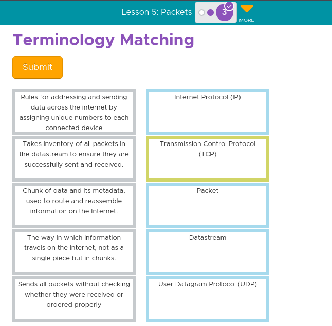

In Unit 2, we started off learning about types of networks which are centralized and distributed. The five main types of computer networks are LAN (Local Area Network), PAN (Personal Area Network), MAN (Metropolitan Area Network), WAN (Wide Area Network),and VPN (Virtual Private Network). Key vocabulary from this unit were path, bandwidth, protocol, IP address, router, redundancy, fault tolerance, packet, datastream, packet metadata, and digital divide. We also learned about protocols on the internet like User Datagram Protocol (UDP), Transmission Control Protocol (TCP), Domain Name System (DNS), and Hypertext Transfer Protocol (HTTP).
How do you use the Internet? Think about your typical day. When are you using the Internet? For what purposes? What role does it have in your life? --- I use the internet to do schoolwork, play games, watch videos, and more. Most of my day is spent at school and I use the internet for google classroom or to search things.
Describe two different paths that a message could take from Person A to Person D. --- Make three rings of people: The outer ring will have the most amount of people connected in a circle. The second ring will connect the outer ring to four people. The third ring will connect two people.
Pick the two statements that are true about the Internet Protocol (IP): --- Each device or computer on the Internet is assigned a unique IP address. & IP is the shared way that all devices and computers label their messages with the sender and receiver's addresses.
Describe how the Internet Protocol (IP) allows devices to easily connect and communicate on the Internet. --- The Internet Protocol (IP) gives each device a unique address (IP address) to connect and communicate on the Internet. This address helps devices find and talk to each other easily within a network.
Pick Two: If the post office delivered mail exactly like the routers deliver messages on the Internet, which of the following statements would be true? ---
The mailman would sometimes take a different path to deliver each letter to your home & Letters would be written on the outside of the envelope for all to read instead of letters put inside envelopes
What are the benefits of building redundancy into a network? What are the potential issues with building redundancy? --- Building redundancy in a network has benefits like better business continuity, cost savings, and improved uptime. However, it can also bring complexity, increased costs, and scalability challenges.
Which of the following is true regarding the way information is transmitted on the Internet? --- Information does not travel in one piece, but rather as a datastream of packets.
Terminology Matching --- 
In your own words explain the following about the Domain Name System: What problem does the DNS solve?, How does the DNS help the world wide web scale so that billions of users can access billions of web pages?
--- The Domain Name System (DNS) acts like the Internet's phonebook, converting human-friendly website names into computer-readable IP addresses. It solves the problem of matching domain names to IP addresses. DNS helps the web scale by quickly translating these names into IP addresses through a network of servers, caching information to speed up the process, and using a hierarchical structure for efficient resolution. This system allows billions of users to access countless web pages smoothly.
Choose the two statements that best describe the relationship between HTTP and the World Wide Web: --- The World Wide Web is a collection of pages and files that is shared between computers using HTTP & HTTP and the World Wide Web both rely on other layers of protocols for sending information on the Internet